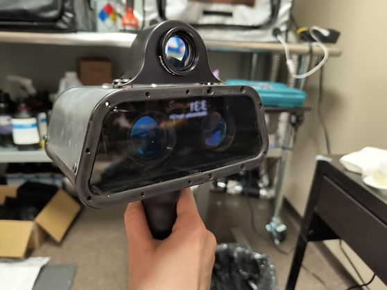

Tactical Laser Communication

Gen-4 Optical Transceiver
Our fourth-generation system enables encrypted high-bandwidth laser communication, designed for tactical and long-range defense deployments.

Prototype Platform
Ruggedized, modular, and compact — our platform supports mission-critical use cases with reduced latency and enhanced resilience.